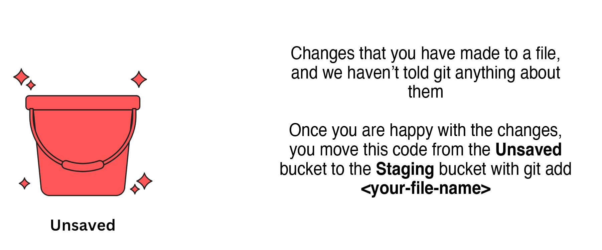
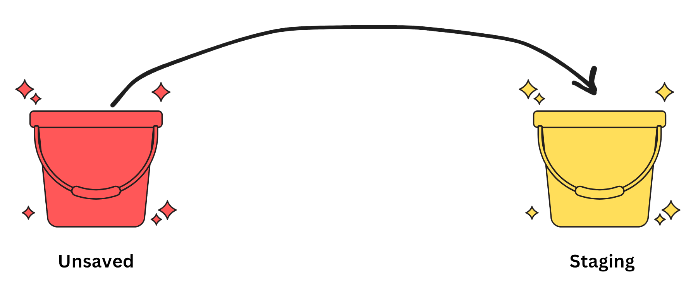
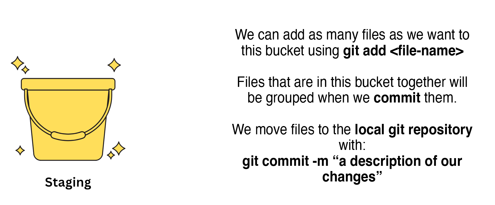
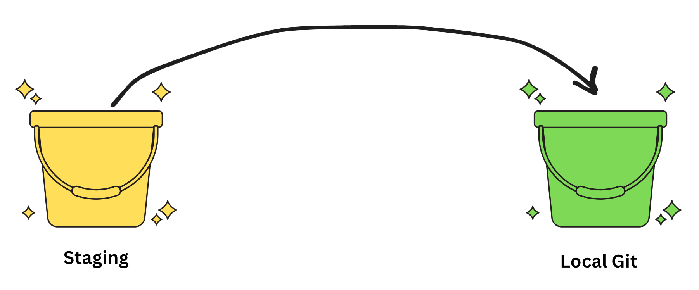
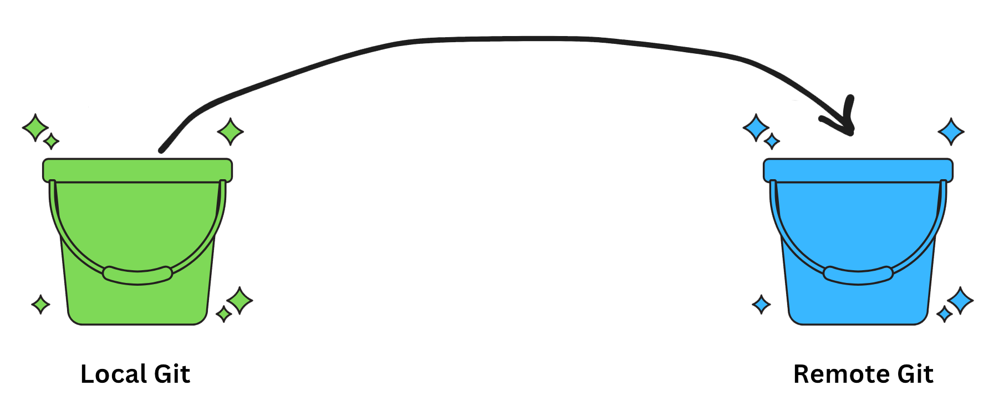
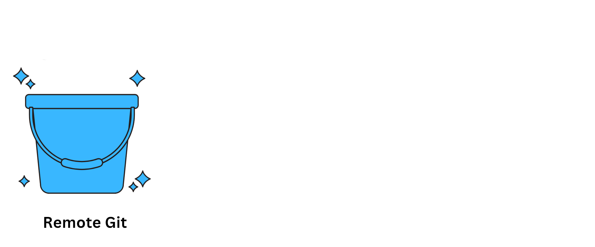
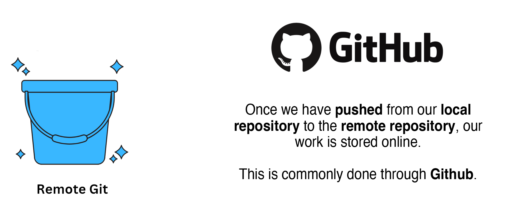

What is Git?
Git is a version control system.
A version control system is a way of keeping track of the history of a file - often a code file - as changes are made over time.
Git allows multiple authors to contribute, suggest changes, and review changes suggested by others - without losing any information along the way.
Git Lifecycle
Information tracked by git moves one step at a time through the git lifecycle from unsaved content to a remote git repository.
The lifecycle flows in the same order each time:
Unsaved ⮕ Staging ⮕ Local Git ⮕ Remote Git
">

.
Files that are in this bucket together will be grouped when we commit them.
We move files to the local git repository with:
git commit -m “a description of our changes”">




